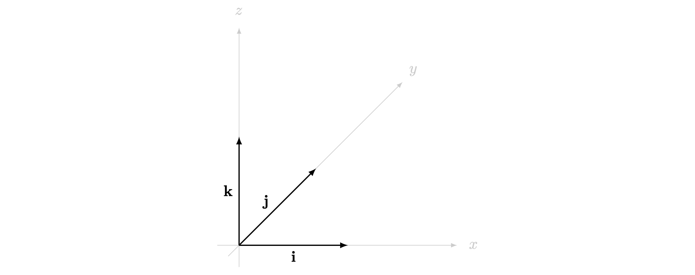

Introduction To Vectors
Introduction
In mathematics, physics and engineering, you will come across two types of quantities, scalar quantities such as length, mass, time, distance, density, area, volume, temperature, work, etc. and vector quantities like position, displacement, velocity, acceleration, force, momentum, etc.
Vectors has various real-life applications across different fields, such as Engineering, Navigation and GPS, Computer Graphics and Gaming, Data Analysis and Machine learning, Cryptography and much more. In this guide, you will study some of the fundamental concepts about vectors, various operations on vectors, and their algebraic and geometric properties.
Size or extent of a physical quantity. Magnitude and length can be used inter-changeably when discussing vectors.
Any physical quantity that has magnitude only and no direction are called scalar quantities. Scalars are represented by a single real number along with appropriate units of measurement. They can be positive, negative or zero.
Any physical quantity that has both magnitude and direction is called a vector quantity.
Besides this, a physical quantity, which is a vector, should also follow laws of vector addition. For example, electric current has both magnitude and direction, but it doesn’t follow laws of vector addition (you will see this in the next guide) and hence is not a vector.
In classifying \(15\textsf{kg}\), \(45\textsf{m}/\textsf{s}^2\) and \(70\textsf{W}\) as either a scalar or vector quantity, \(15\textsf{kg}\) and \(70\textsf{W}\) are scalar quantities because mass and power don’t have direction, whereas, \(45\textsf{m}/\textsf{s}^2\) is a vector quantity because accelaration needs direction.
Zero Vector:A vector is said to be a zero or a null vector if its magnitude is zero. For example, a stationary body has the velocity vector of zero.
Equal Vectors:Vectors are said to be equal if they have the same magnitude as well as the direction.
Drawing Vectors
Consider a line segment \(AB\) in space and let a direction be assigned to it. The arrow marked on the line denotes the direction of the vector. Vectors are written with a little arrow over its head, for example, \(\overrightarrow{AB}\).
The direction in which the arrow points towards is called the head of a vector, which makes the other end, the tail of the vector. The length of the line indicates the magnitude of the vector and is denoted by \(|\overrightarrow{AB}|\).


A vector whose magnitude is the same as that of the given vector \(\mathbf{a}\) but is in the opposite direction is called the negative of a vector and is denoted by -\(\mathbf{a}\).
When a ball is dropped from a height, gravity acts in the same direction as the motion of the ball, hence, the gravitational force \(\mathbf{a}=10\textsf{m}/\textsf{s}^2\). A negative gravitational force would mean that gravity is working in the opposite direction of the motion, which is the case of a vertically projected body, here, \(-\mathbf{a}\) is applied.
A car A travels from point \(P\) to point \(Q\) with a velocity of \(80 km/hr\). Simultaneously, a car B starts travelling from point \(Q\) to point \(P\) with the same velocity.
In this case, as the velocity vectors are in the opposite direction for the two cars. \(\overrightarrow{PQ}=80\textsf{km}/\textsf{hr}\) for car A while \(\overrightarrow{QP}=80\textsf{km}/\textsf{hr}\) for car B.
Continuing the Example 3, consider the car B to be travelling in the same direction as car A but with double the velocity. Visually, the velocity vector would also become double for the second car (As shown in Figure 3)

Free and Localized Vectors
If the initial point of a vector can be chosen then the vector is said to be a free vector. A free vector can be displaced parallel to itself as long as the magnitude and the direction stay the same.
If the initial point is restricted to a specific point then that vector is called a localized vector.
Force, momentum, impulse are some examples of free vectors because they remain unchanged when translated to a different location in space, whereas, displacement and velocity vectors are localized vectors because they change when translated to a different location in space.
Vectors In Three-Dimensional Space
A vector \(\mathbf{a}\) can be expressed in two-dimensional and three-dimensional space through various coordinate systems. You will see the standard cartesian coordinate system in this guide.
Unit vectors are vectors whose magnitude is exactly \(1\). They are represented as \(\hat{a}\), with a cap or a hat over its head. Consider the vector \(\mathbf{a}\), then the unit vector of \(\mathbf{a}\) is defined as:
\(\hat{a}=\frac{\mathbf{a}}{|\mathbf{a}|}\)
Where the vector \(\mathbf{a}\) is divided by its magnitude.
- Parallel Vectors: Vectors having the same unit vector are known as parallel vectors. They can be expressed as scalar multiples of one another.
In a three-dimensional space, \(\hat{i}\), \(\hat{j}\), \(\hat{k}\) are the unit vectors along the \(x\)-axis, \(y\)-axis and \(z\)-axis respectively. These are also written like \(\mathbf{i},\mathbf{j},\mathbf{k}\) and any vector in the cartesian coordinate system can be generally represented in terms of this.

Any vector \(\vec{a}\) can be expressed in the format
\(\mathbf{a}=x\mathbf{i}+y\mathbf{j}+z\mathbf{k}\)
where \(x\) is the coefficient of the vector along the \(\mathbf{i}\)-direction, \(y\) is the coefficient along the \(\mathbf{j}\)-direction, and \(z\) is the coefficient along the \(\mathbf{k}\)-direction.
Here, a positive \(x\) is along the positive \(x\)-axis, whereas the vectors towards the negative \(x\)-axis would have a negative \(x\) value. The same is true for the other two axis as well.
You are given a vector \(\mathbf{a}=2\mathbf{i}+5\mathbf{j}+4\mathbf{k}\) , this means that the vector \(\vec{a}\) is a free vector with \(2\) units along the positive \(x\)-axis, \(5\) units along the positive \(y\)-axis and \(4\) units along the positive \(z\)-axis.
You are given a vector \(\mathbf{b}=-7\mathbf{k}+3\mathbf{i}\), this means that the vector \(\vec{b}\) is a free vector with \(3\) units along the positive \(x\)-axis, \(0\) units along the \(y\)-axis and \(7\) units along the negative \(z\)-axis. This means that the vector lies in the \(x-z\) plane, making it a two-dimensional vector.
You are given a vector \(\mathbf{c}=25\mathbf{i}\), this means that the vector \(\vec{c}\) has direction only along the positive \(x\)-axis with a magnitude of \(25\). This a one-dimensional vector.
Column Vectors
This is another way of representing vectors. A column vector is a vector whose components are listed vertically in a single column. So, a vector \(\vec{a}\) can be written as:
\(\mathbf{a}=x\mathbf{i}+y\mathbf{j}+z\mathbf{k}=\begin{pmatrix}x\\y\\z\end{pmatrix}\)
You are given the vector \(\mathbf{l}=3\mathbf{i}-4\mathbf{j}+5\mathbf{k}\), to represent this vector in column notation you make a \(3 \times 1\) matrix with entries \(3,-4\) and \(5\) respectively. So, \(\mathbf{l}=3\mathbf{i}-4\mathbf{j}+5\mathbf{k}=\begin{pmatrix}3\\-4\\5\end{pmatrix}\)
To find if the vector in Example 9 and \(\mathbf{d}=\begin{pmatrix}6\\-8\\10\end{pmatrix}\) are parallel or not, you check if the corresponding coefficients have the same ratio.
Since \(\frac{3}{6}=\frac{-4}{-8}=\frac{5}{10}=\frac{1}{2}\), these two vectors have the same ratio of \(1:2\), hence, \(\mathbf{l}\) and \(\mathbf{d}\) are parallel to each other.
To express the vector \(\mathbf{B}=\begin{pmatrix}7\\1\\4\end{pmatrix}\) in terms of \(\mathbf{i},\mathbf{j},\mathbf{k}\), you can write \(\mathbf{B}=\begin{pmatrix}7\\1\\4\end{pmatrix}=7\mathbf{i}+\mathbf{j}+4\mathbf{k}\)
Position Vectors, denoted \(\mathbf{r}\), are vectors that indicate the position of a body.
Consider a point \(P\) in space, having coordinates \((x,y,z)\) with respect to the origin \(O(0,0,0)\), the vector \(\overrightarrow{OP}\) is the position vector for the point \(P\). So,
\(\mathbf{r}=x\mathbf{i}+y\mathbf{j}+z\mathbf{k}\), for the point P.
Then the magnitude of the position vector \(\mathbf{r}\) is given by \(|\mathbf{r}|=\sqrt{x^2+y^2+z^2}\).

Any vector \(\mathbf{a}=x\mathbf{i}+y\mathbf{j}+z\mathbf{k}\) can have its unit vector expressed as
\(\hat{a}=\frac{\mathbf{a}}{|\mathbf{a}|}=\frac{x\mathbf{i}+y\mathbf{j}+z\mathbf{k}}{|\mathbf{a}|}=\frac{x\mathbf{i}+y\mathbf{j}+z\mathbf{k}}{\sqrt{x^2+y^2+z^2}}\)
So, \(\hat{a}=\frac{x\mathbf{i}+y\mathbf{j}+z\mathbf{k}}{\sqrt{x^2+y^2+z^2}}\)
Given \(\mathbf{p}=\mathbf{i}+4\mathbf{j}-9\mathbf{k}\), to find the unit vector \(\hat{p}\), you find the magnitude of \(\mathbf{p}\):
\(|\mathbf{p}|=\sqrt{1^2+4^2+(-9)^2}\).
Then, using the tip from above, the unit vector is
\(\hat{p}=\frac{\mathbf{i}+4\mathbf{j}-9\mathbf{k}}{\sqrt{1^2+4^2+(-9)^2}}=\frac{\mathbf{i}+4\mathbf{j}-9\mathbf{k}}{\sqrt{98}}\)
Which can be simplified to: \(\hat{p}=\frac{1}{7\sqrt{2}}\mathbf{i}+\frac{4}{7\sqrt{2}}\mathbf{j}-\frac{9}{7\sqrt{2}}\mathbf{k}\)
Given \(\mathbf{q}=-4\mathbf{i}+2\mathbf{j}+11\mathbf{k}\), to find the unit vector \(\hat{q}\), you find the magnitude of \(\mathbf{q}\),
\(|\mathbf{q}|=\sqrt{(-4)^2+2^2+11^2}=\sqrt{141}\).
Then the \(\hat{q}=\frac{-4\mathbf{i}+2\mathbf{j}+11\mathbf{k}}{\sqrt{141}}=-\frac{4}{\sqrt{141}}\mathbf{i}+\frac{2}{\sqrt{141}}\mathbf{j}+\frac{11}{\sqrt{141}}\mathbf{k}\)
Quick Check Problems
State whether these statements are TRUE or FALSE.
The magnitude of a vector is always a positive value. Answer: .
The zero vector has a magnitude of one. Answer: .
If \(\mathbf{a}=\begin{pmatrix}2\\-5\\-3\end{pmatrix}\), then what is \(|\mathbf{a}|\)?
Answer: \(|\mathbf{a}|\) is equal to .
Find the unit vector in the direction \(\mathbf{a}=-3\mathbf{i}+4\mathbf{k}\).(Answer in decimals)
Answer: \(\hat{a}\) is equal to \(\mathbf{i}+\)\(\mathbf{k}\).
The position vector of P is \(a\mathbf{i}+2\mathbf{j}-11\mathbf{k}\) (where \(a\) is a positive integer) and the distance from the origin is 15, then what is the value of \(a\)?
Answer:.
For more questions on this topic, please go to Questions: Introduction To Vectors.